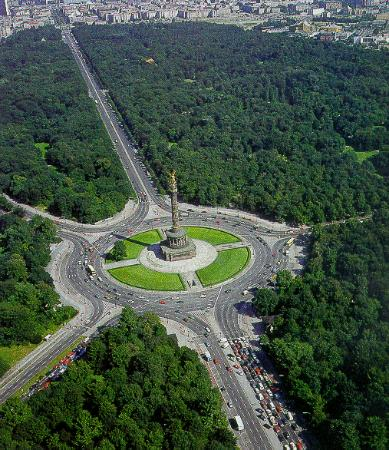

The German Museum of Technology has many things to see, and learn about like
Film technology, Computer science, Aerospace engineering, and much more
Berlin's Tiergarten park used to be a hunting ground before Friedrich III turned it into a national park
Tiergarten park can be easily compared to central park in New York. It has been redesigned several times,
and attracts people everywhere
